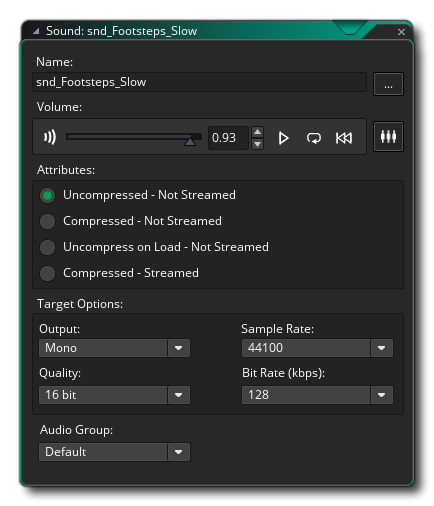

Alle Spiele müssen Sound-Effekte haben und die meisten haben auch Musik, was bedeutet, dass Sie sie in GameMaker Studio 2 zu Ihrem Spiel hinzufügen können. Dies geschieht über den Sound-Editor, der immer dann geöffnet wird, wenn Sie eine neue Sound-Ressource erstellen. 
Sounds in GameMaker Studio 2 können unkomprimiert oder komprimiert sein, wobei komprimierte Sounds zusätzliche Optionen haben, wie sie zur Laufzeit mit ihnen umgehen können. Unkomprimierte Sounds sind solche, die als gespeichert wurden WAV Dateien formatieren, während komprimierte Sounds entweder sein können MP3 oder OGG Format. Im Allgemeinen werden kleine Soundeffekte gewünscht WAV und größere Effekte oder Musik zu sein MP3 oder OGG. Wie bei den anderen Ressourcen wird empfohlen, dass Sie Ihre Sounds mit einem geeigneten Präfix wie "snd_" benennen, damit Sie sie später leicht identifizieren können.
Das Hinzufügen eines Sounds ist so einfach wie das Klicken auf die Schaltfläche Sound hinzufügen  und dann im Datei-Explorer nach der Datei suchen, die Sie verwenden möchten. Nachdem Sie einen ausgewählt und geladen haben, können Sie ihn mit den angezeigten Wiedergabesteuerelementen in der Vorschau anzeigen und bestimmte Attribute für den Export der Datei ändern. Wenn Sie sich nicht sicher sind, lassen Sie einfach alles "wie es ist", wenn Sie Musik hinzufügen oder MP3 Format-Sounds sollten Sie wahrscheinlich in das komprimierte - nicht gestreamte Format ändern. Weitere Informationen zum Sound-Editor finden Sie hier.
und dann im Datei-Explorer nach der Datei suchen, die Sie verwenden möchten. Nachdem Sie einen ausgewählt und geladen haben, können Sie ihn mit den angezeigten Wiedergabesteuerelementen in der Vorschau anzeigen und bestimmte Attribute für den Export der Datei ändern. Wenn Sie sich nicht sicher sind, lassen Sie einfach alles "wie es ist", wenn Sie Musik hinzufügen oder MP3 Format-Sounds sollten Sie wahrscheinlich in das komprimierte - nicht gestreamte Format ändern. Weitere Informationen zum Sound-Editor finden Sie hier.
Beachten Sie, dass Sounds viel Speicherplatz auf der Festplatte beanspruchen. Daher sollten Sie bei der Erstellung für Ihre Spielprojekte vorsichtig sein. Brauchen Sie wirklich einen 48KHz Sound Effekt, der nur für den Bruchteil einer Sekunde spielt? Wahrscheinlich nicht so, denke darüber nach, die Samplerate hier auf 11025 oder 22050 für Effekte zu reduzieren, und für längere Dinge wie Musik oder für Looping-Effekte denke auch über die Verwendung eines komprimierten Formats nach. Beachten Sie auch, dass bei Verwendung von räumlichen 3D-Audioeffekten die ursprüngliche Audiodatei mono sein muss.
Sie können den Sound-Editor jetzt schließen und wir können mit dem Erstellen von Objekten fortfahren...